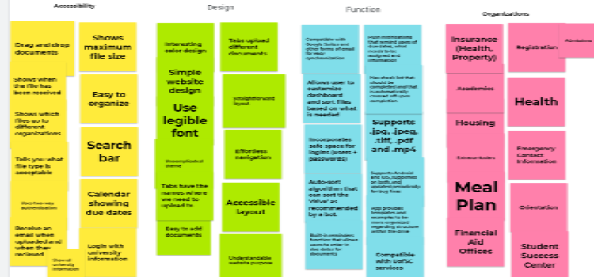
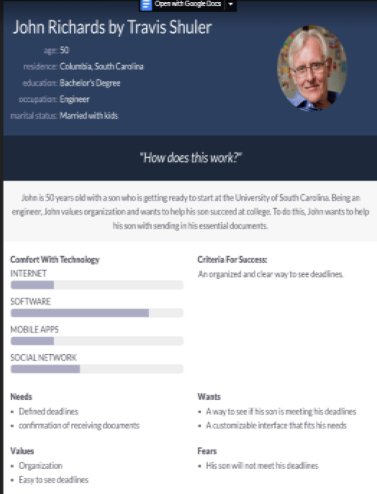
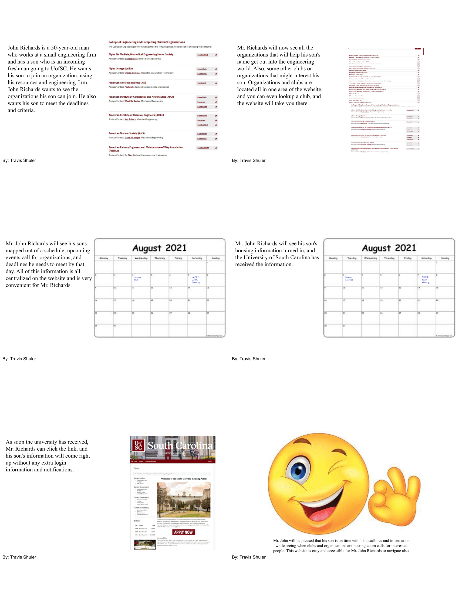
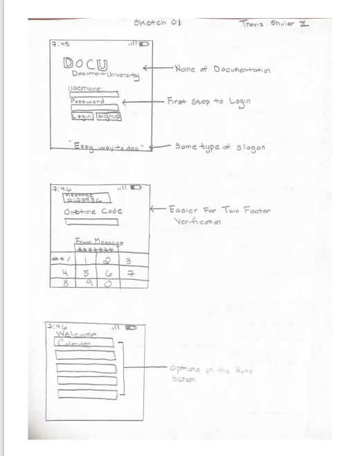

Problem Statement: Documentation
UofSC students need a way to upload all of their documents to the same place and receive confirmation that it has been received.

Affinity Diagram: Documentation
My groupmates and I created a diagram to show our problem statement's accessibility, design, function, and organization.
We showed the different ways it helps USC students and makes it easy to use.

Persona John: Documentation
My groupmates and I created different personas that could benefit the other users and the people we made.
This persona chart or graph shows the personas' wants, criteria, fears, values, and needs.

Storyboard: Documentation
My groupmates and I created a storyboard to visually show how the program can help users of different ages and a computer's skill level.
The storyboard outlines and shows the user's needs and wants and how they are met through the website.

Sketches: Documentation
My groupmates and I drew out the individual screens on how the applications look. This visual representation helps the user get a visible description of how the application works.
Problem Statement: Documentation
UofSC students need a way to upload all of their documents to the same place and receive confirmation that it has been received.
Affinity Diagram: Documentation
My groupmates and I created a diagram to show our problem statement's accessibility, design, function, and organization. We showed the different ways it helps USC students and makes it easy to use.
Persona John: Documentation
My groupmates and I created different personas that could benefit the other users and the people we made. This persona chart or graph shows the personas' wants, criteria, fears, values, and needs.
Storyboard: Documentation
My groupmates and I created a storyboard to visually show how the program can help users of different ages and a computer's skill level. The storyboard outlines and shows the user's needs and wants and how they are met through the website.
Sketches: Documentation
My groupmates and I drew out the individual screens on how the applications look. This visual representation helps the user get a visible description of how the application works.